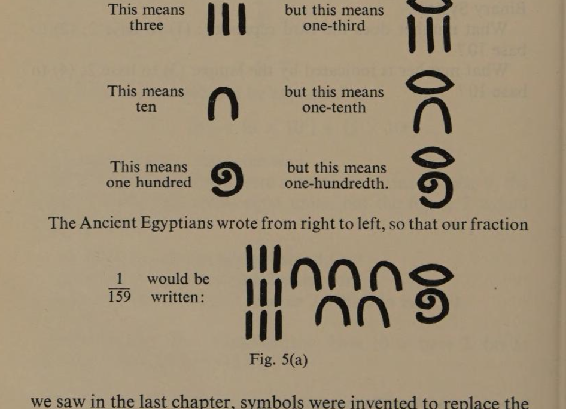
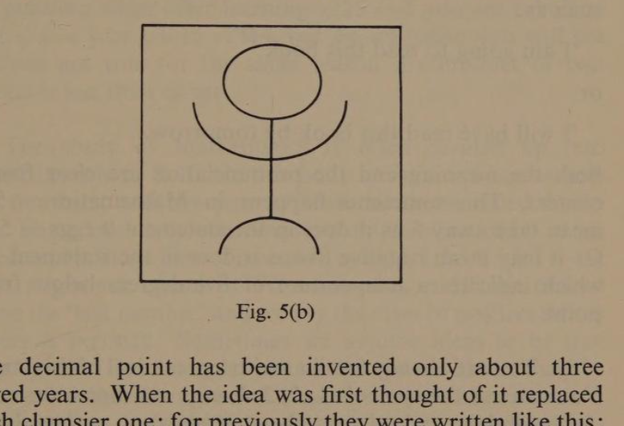
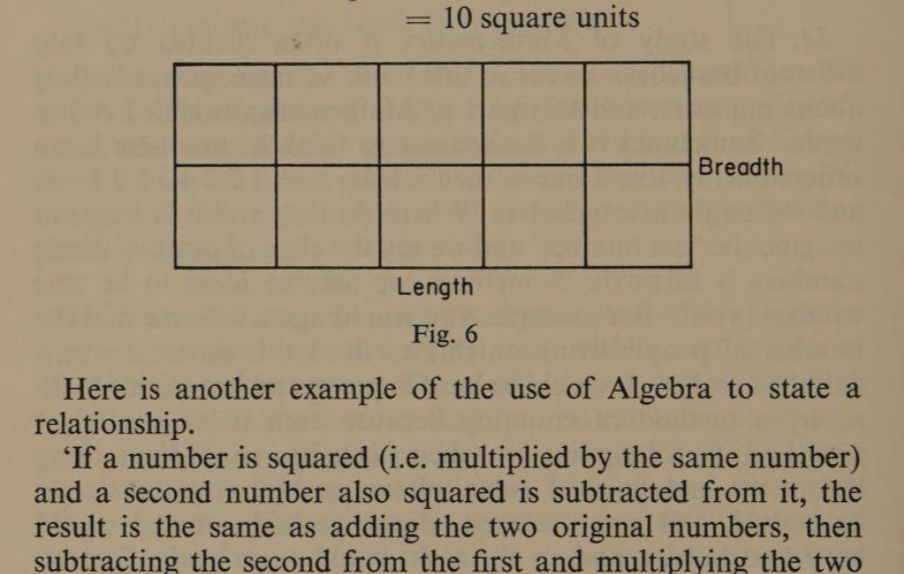
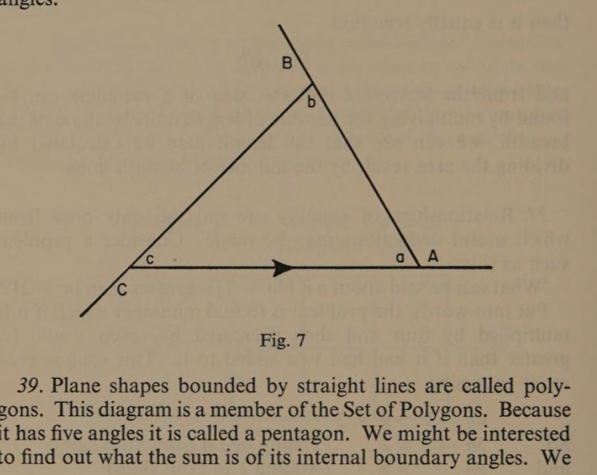
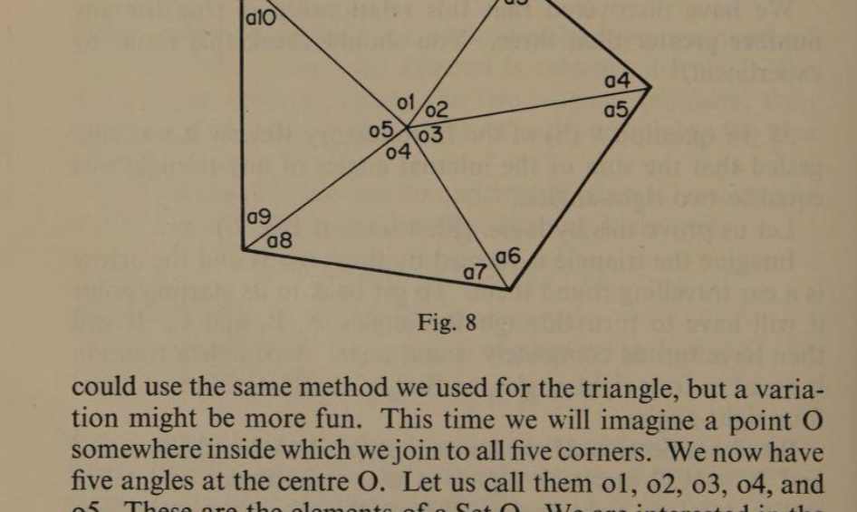
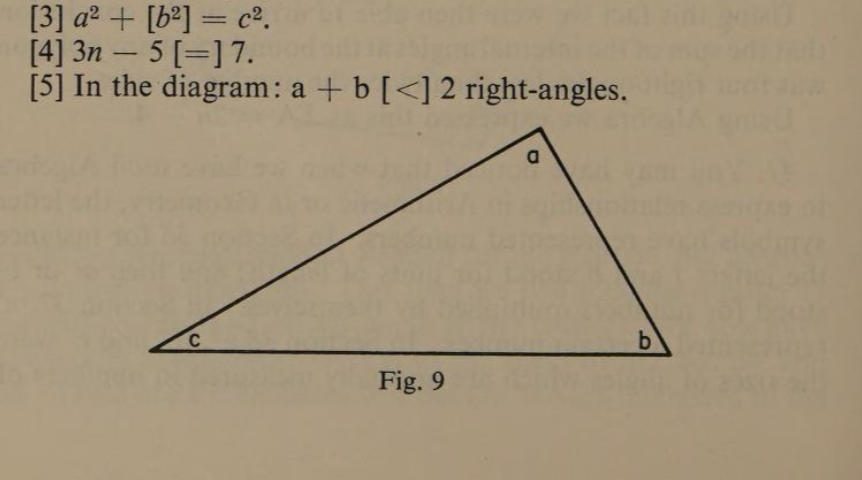
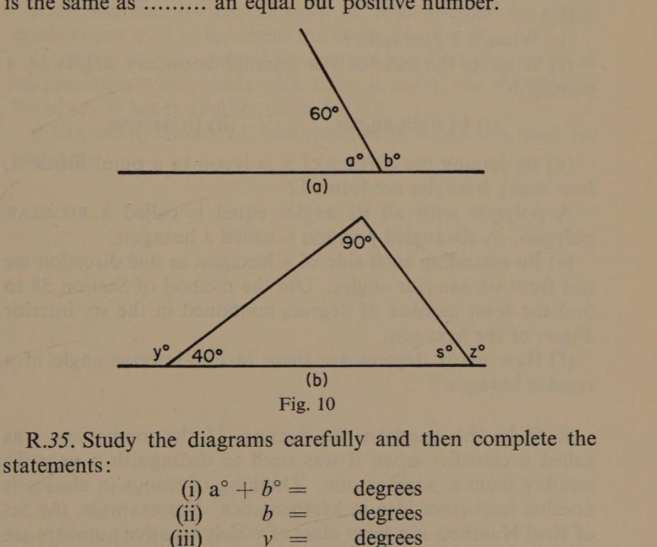

Chapter Three
Mathematese — the Language of Mathematics
page 2028. Mathematics is the language we use to describe accurately the physical world around us. In everyday use it is employed to answer questions such as How many? How big? How far? How fast? But because it is a language it grows and changes with usage and with the development of ideas. Before steam engines were invented there were no such words as railway station, footplate men, main-line express, or cheap day excursions. There were words like guard, tunnel, flag, ticket, and platform, and these were able to be merged into the language of railways.
29. So it is with Mathematese. When man first felt the need to count, names were invented to mean ‘how many’. Then, as we saw in the last chapter, symbols were invented to replace the words. When man began to measure he found whole numbers were inadequate to describe parts of things and so fractionspage 21 were thought of, and then symbols to represent them. This process took a long time. The Ancient Egyptians, for example, knew of only those fractions with 1 as the numerator, e.g. ⅓. They did, however, have a symbol for ⅔. Fractions were written as ordinary numbers, but with a special sign above them to show they were fractions (see Fig. 5(a)).

They were the people who drew a picture of a coiled rope to represent one hundred. This is their symbol for ten-thousand. It is the picture of a man with his arms raised above his head… probably in astonishment at thinking of such a big number!

The decimal point has been invented only about three hundred years. When the idea was first thought of it replaced a much clumsier one; for previously they were written like this: 352·3″ 6‴. In our modern notation we write 35·236 which, I am sure you will agree, looks easier to handle.
30. Like all language, Mathematese is a way of communicating ideas and to do this it must provide names, operators, and even descriptions. In spoken language we call these nouns, verbs, and adjectives. In Mathematics we almost always state some kind of relationship between our terms, such as being equal or not equal; or being greater or less than. In ordinary language we use a great many other kinds of words and it is not always possible to match the two kinds of language exactly. This is because in written or spoken language we are not only concerned with expressing facts but also with evoking emotions. That was why we were careful to distinguish decisions based upon facts from those based upon principles. Because it is concerned only with logic, Mathematics cannot have the beauty or the poetry of verbal language, but neither can it be thepage 22 instrument of hatred or injustice. To some people, the language of Mathematics has an elegance of its own in the pattern and symmetry of its results.
31. In ordinary language words often have more than one meaning. For instance, the word ‘pound’ can mean a weight or it can mean a sum of money. We don’t find this confusing because we can tell from the rest of the sentence which meaning is intended. Again, if we see the word ‘read’ on its own we can’t tell whether we should say ‘r-e-d’ or ‘r-e-e-d’. But in sentences such as
‘I am going to read this book.’
or
‘I will have read this book by tomorrow.’
both the meaning and the pronunciation are clear from the context. This sometimes happens in Mathematics: 5 may mean take away 5 as it does in the statement 9 eggs − 5 eggs. Or it may mean negative five as it does in the statement −5°C which indicates a temperature of five degrees below freezing point.
32. You are already familiar with a great deal of this language. You can use the symbols 1, 2, 3, 4, etc., and operators such as +, −, and ×, and relators like = (equals) or < (less than) or > (greater than) and so on. Perhaps you can remember some examples which were confusing at first because they seemed contradictory. This occurs to all of us when some symbol such as multiplication is not clearly explained or fully understood. Sometimes we are puzzled when the same symbol is used for what appear to be two different purposes, as was the case of the negative sign in the last paragraph.
Multiplying by fractions is sometimes troublesome because when we first learn to multiply whole numbers we get used to the answers being bigger than the numbers we multiply together and the idea grows in our minds that multiplying always causes an increase. But multiplying is only a grouping of parts, so that 3 × 5 is five groups of three, or three groups of five, or one group of fifteen. Therefore, when we consider this statement, [2 × ¼], it clearly asks for a quarter of a group of two, or two quarter-groups, and either is the same as half a group. Thus, we write 2 × ¼ = ½.page 23
33. Sometimes it aids our understanding if we look at a series of results:
5 × 3 = 15 5 × 2 = 10 5 × 1 = 5 5 × ½ = 2½, etc.
Notice that as the number of groups decreases the result decreases, so that when we multiply together two numbers less than unity, the result must be smaller than either of them. For ¾ × ⅔ means two-fifths of three-quarters which is less than three-quarters, or three-quarters of two-fifths which is less than two-fifths. You may have found the behaviour of square roots puzzling when after learning √25 = 5 you are asked to accept √¼ = ½ or √0·16 = 0·4, but on reflection you will see that these are true for the same reason that the product of two fractions is less than either.
34. The study of Mathematics is often divided up into different branches. So far in this book we have spoken mainly about numbers, and this part of Mathematics is called Arithmetic. Sometimes it is convenient to think of numbers in an ordered array, like a line of men side by side, 1 2 3 4 5 6 7 8 →, and we might ask ourselves ‘Where do they end?’ We cannot imagine the ‘last number’ and we say the class of positive whole numbers is infinite. For example, you would agree with me that the number of people living on this earth at this moment was a definite number. It would be hard to prove and impossible to do so by a method of counting because even if we could get everybody in a long line and then started to count them, long before we had finished some whom we had counted would have died, and some whom we had counted would have had babies, and so the task would never end. A more puzzling idea comes from dividing numbers into two kinds, odd, and even. If numbers never end there must be an infinite number of even numbers. If both the set of whole numbers and the set of even numbers are infinite, does this mean there are as many even numbers as there are whole numbers?
The man who first talked to his sheep by using numbers could have had no idea of the difficult questions we were going to ask about the numbers he invented.
35. Geometry is the study of points, lines, planes, solids, and angles. An angle is part of a complete rotation. If I am facing North and I turn to face East, I have turned a quarter of a turn.page 24 This is called a right-angle. Two right-angles side by side make a half-turn so that from facing West to facing East is a half-turn. We give a right-angle the numerical value of 90° so that at the point 0 the angle from East to West or from West to East is 180°, W ← 0 → E.
36. Algebra is a concise statement of relationships. Formulas are examples of this. For example, if we want to calculate the area of a rectangle (by which we mean the amount of surface enclosed by its boundary) we do so by multiplying the number of units of its length by the number of units of its breadth. This can be stated algebraically as
A = lb
substituting = 5 units × 2 units
= 10 square units

Here is another example of the use of Algebra to state a relationship.
‘If a number is squared (i.e. multiplied by the same number) and a second number also squared is subtracted from it, the result is the same as adding the two original numbers, then subtracting the second from the first and multiplying the two results.’
This statement is not easy to understand when it is written in words. Set out as a calculation the meaning is clearer:
8² − 3² = [8 + 3] × [8 − 3]
i.e. 64 − 9 = 11 × 5 (which is clearly true)
Using the symbolic language of Algebra we state this as:
a² − b² = [a + b] × [a − b]
because no matter what numbers a or b stand for, the relationship is always true. For this reason we use ≡ instead of =, and we call the relationship an identity.page 25
37. Relationships of equality are not the only ones from which useful deductions may be made. From both kinds of relationships others can be deduced. For instance: If
A = lb
then it is equally true that
l = A/b
and from the statement that the area of a rectangle can be found by multiplying the number of length units by those of the breadth, we can see that the length may be calculated by dividing the area result by the number of breadth units.
Consider a problem such as this: ‘What can be said about n if [4n − 7] is greater than [n + 2]?’ Put into words, the problem is to find a number which if it is multiplied by four and then decreased by seven would be greater than if it had had two added to it. This sounds even more confusing.
| 4n − 7 > n + 2 | ||
| So | 3n − 7 > 2 | (Taking over n from both sides) |
| and | 3n > 9 | (Adding 7 to both sides) |
| thus | n > 3 | (Dividing both sides by three) |
We have discovered that this relationship is true for any number greater than three. You should check this result by experiment.
38. In question 9(b) of the Introductory Review it was suggested that the sum of the internal angles of any triangle was equal to two right-angles. (First look at Fig. 7.)
Imagine the triangle is formed by three roads and the arrow is a car travelling round them. To get back to its starting point it will have to turn through the angles A, B, and C. It will then have turned completely round once. A complete rotation is equal to four right-angles, so that A° + B° + C° must equal four right-angles.
But from Section 35 we know that [a° + A°] and [b° + B°] and [c° + C°] are each equal to two right-angles, and altogether, total six right-angles. If from this we subtract the fourpage 26 right-angles of A + B + C, we are left with two right-angles which must be the total of a + b + c.
As we can deal with any triangle in this way it must always be true that the three internal angles of a triangle total two right-angles.

39. Plane shapes bounded by straight lines are called polygons. This diagram is a member of the Set of Polygons. Because it has five angles it is called a pentagon. We might be interested to find out what the sum is of its internal boundary angles. We could use the same method we used for the triangle, but a variation might be more fun. This time we will imagine a point O somewhere inside which we join to all its five corners. We now have five angles at the centre O. Let us call them o1, o2, o3, o4, and o5. These are the elements of a Set O. We are interested inpage 27 the boundary angles a1, a2, a3, a4, a5, a6, a7, a8, a9, and a10. Let us call them Set A.

Now notice we have five triangles — one for each side of the polygon. Each has an angle-sum of two right-angles, therefore in all five triangles there must be an angle-sum of ten right-angles. The angles of the triangles are made up of Set O + Set A. The Set O is a complete rotation, it is equivalent to four right-angles, and therefore the Set A must have an angle-sum of [10 − 4] right-angles. Can you see that because there will always be as many triangles as there are sides to the polygon, the sum of the internal boundary angles of any polygon will be [twice the number of sides minus four] right-angles?
Geometrical facts can often be stated more concisely by the use of algebra. Σ means the sum of the elements of a Set. Thus, ΣO means the sum of the centre angles, and ΣA means the sum of the boundary angles. If we let n stand for the number of sides any polygon has, we can state the relationship we have discovered like this:
ΣA = [2n − ΣO] right-angles ∴ ΣA = [2n − 4] right-angles.
40. We are now getting nearer to an understanding of what Mathematics really is. The last few examples have shown it to be a connected system of relationships based upon ideas which, although we may not be able to prove them, are clearly true. In Section 35 we assumed that a complete turn would bring you back to the same direction. We defined a part of a turn and called it an angle. A quarter of a turn we called a right-angle. From this we were then able to show that a straight line contained a half-turn and was equivalent to two right-angles. From this we went on to deduce that the interior angles of any triangle totalled the same as two right-angles.
Using this fact we were then able to arrive at the conclusion that the sum of the internal angles at the boundary of any polygon was four right-angles less than twice the number of sides. Using Algebra we expressed this as ΣA = 2n − 4.
41. You may have noticed that when we have used Algebra to express relationships in Arithmetic or in Geometry, the letter symbols have represented numbers. In Section 36 for instance the letters l and b stood for units of length, and then a° or b° stood for numbers multiplied by themselves. In Section 37 ‘n’ represented a certain number. In Section 38 a°, b°, and c° represented the sizes of angles which are normally measured in numbers ofpage 28 degrees. In Section 39 we once more used a letter to mean the number of sides of a polygon. You will see why the Algebra we have been using is sometimes called Generalised Arithmetic or the Algebra of Number. There are other Algebras. One of them is known as Propositional Algebra or the Algebra of Sentences. We will look at this in our next chapter.
Third Review
R.28. Mathematics has grown out of man’s increasing knowledge of the world around him. Counting, measuring, trading, exploring, have all helped to develop his mathematical ideas. Can you think of anything in our time that could bring about new developments in Mathematics?
R.29. (a) What probably gave man the idea of fractions?
(b) The Ancient Egyptians used only unit fractions. Instead of writing &frac47; they would write [½ + 1⁄14]. Can you use this method to indicate: (1) ¾; (2) ⅗?
(c) Improvements in notation have made calculations easier. One example is decimal fraction notation.
- Write this in the modern way 42′ 6″ 9‴.
- Write this in older notation 17·683.
R.30. (a) ‘Mathematese’ is a coined word. What does it mean?
(b) Study the statements below and say whether the symbols in brackets are used to indicate an operation or a member of a set of elements or a relationship.
- 4 + [2] > 7 − 3.
- 5 + 1 = 3 [×] 2.
- a² + [b²] = c².
- 3n − 5 [=] 7.
- In the diagram: a + b [<] 2 right-angles.

R.31. (a) In the paragraph two meanings of the word pound are given. There are two other meanings. Can you think of them?
(b) In ordinary language we use classifying words called adjectives to make our meaning clearer. For example, we use words like large or small to give an idea of size; or words like ‘wooden’ or ‘iron’ to indicate the material something is made of. In Mathematics we speak of ‘positive’ numbers when we mean those numbers greater than 0, and ‘negative’ numbers if they are less than 0. In the statement below which of the bracketed symbols is a ‘classifier’ and which is an ‘operator’?
7 [−] 12 = [−] 5
R.32. (a) Does the operation of multiplication always give a bigger answer?
(b) Would you expect the result of dividing by a common fraction to be an increase or a decrease?
(c) Is it possible to get a smaller answer as the result of addition?
(d) Might the result of subtraction be greater than the numbers you combine in that operation?
R.33. (a) Write the results of these operations:
| (i) ⅔ × ⅗ = | (ii) ¾ × ⅜ = |
| (iii) [⅕]² = | (iv) [3⁄10]² = |
| (v) [¾]² = | (vi) [⅝]² = |
| (vii) √36 = | (viii) √64 = |
| (ix) √[25⁄36] = | (x) √[9⁄64] = |
| (xi) [0·3]² = | (xii) [0·5]² = |
| (xiii) [0·8]² = | (xiv) 1² = |
| (xv) √0·04 = | (xvi) √0·16 = |
| (xvii) √0·49 = | (xviii) √0·81 = |
| (xix) √1 = | (xx) √1·44 = |
(b) Complete these statements by inserting the missing words:
- The product of two common fractions is …… than either.
- The square root of a common fraction is …… than the fraction.
R.34. (a) At what number does the set of positive whole numbers start?
(b) Can we think of the biggest one of the set?
(c) What name is given to an unending set?
(d) What are numbers less than zero called?
(e) Is this set unending?
If we write the whole numbers in an ordered array, they look like this:
←n … −5, −4, −3, −2, −1, 0, 1, +2, +3, +4, +5, … +n→
(f) If you count seven back from +3 what number do you get to?
(g) Complete this statement: 4 − 9 = …… .
In Section 33 we looked at a series of results so that the pattern of them might help us to understand a difficult idea. (h) Examine the equations (i) to (v) and notice the pattern of the relationships. Then try to complete (vi) to (xiv):
| (i) +5 − +3 = +2 |
| (ii) +5 − +2 = +3 |
| (iii) +5 − +1 = +4 |
| (iv) +5 − 0 = +5 |
Notice that as the subtracted numbers get less the results get bigger. The number −1 means one less than zero.
| (v) +5 − −1 = +6 |
Now complete the rest, keeping the same pattern.
| (vi) +5 − −2 = |
| (vii) +5 − −3 = |
| (viii) +5 − −5 = |
| (ix) +5 − −7 = |
| (x) +9 − −8 = |
Think about these carefully
| (xi) +8 − +3 = |
| (xii) +8 − −3 = |
| (xiii) +8 + −7 = |
| (xiv) −8 − −3 = |
(i) Complete this: The effect of subtracting a negative number is the same as …… an equal but positive number.
R.35. Study the diagrams carefully and then complete the statements:

- a° + b° = …… degrees
- b = …… degrees
- y = …… degrees
- x = …… degrees
- z = …… degrees
R.36. (a) Give a simple definition of Algebra.
(b) What is a statement in Algebra called when it expresses a relation of equality?
(c) Complete the last statement:
If 10 + 5 = 15 then 5 = 15 − 10.
If a + b = c then b = …… .
R.37. (a) Translate this statement of relationship into words.
5n − 6 = 3n + 10
(b) Using the example in the original Section 37 as a model, find for what values of n the relationship is true.
R.38. In Fig. 7 of Section 38, [a, b, c] are the internal angles, and [A, B, C] are the external angles.
(a) What is the sum of the internal angles of a triangle?
(b) What is the sum of the external angles of a triangle?
R.39. (a) What is a plane shape bounded by straight lines called?
(b) What is a pentagon?
(c) What is the sum of the internal boundary angles of a pentagon? (i) In right-angles (ii) In degrees
(d) By joining the corners of a polygon to a point inside it, how many triangles are formed?
A polygon with all its angles equal is called a regular polygon. A six-angled polygon is called a hexagon.
(e) By extending each side of a hexagon in one direction we can form six exterior angles. Use the method of Section 38 to find the total number of degrees contained in the six interior angles of the hexagon.
(f) How many degrees are there in one interior angle of a regular hexagon?
R.40. In the questions on Section 31 the minus sign was called a classifier when it was used to distinguish a negative number from a positive one. There is, however, another idea in Mathematics. For example, the Set of Real Numbers is a large class of which negative numbers are a smaller set. If we are speaking of the Set of Real Numbers we would think of Negative Numbers as forming a sub-set, andpage 33 each negative number would be called an element of this sub-set. This means that it is also automatically an element of the larger set.
Another example of this kind of classification is seen in geometric shapes. The polygons we have spoken of are a large class to which four-sided figures called quadrilaterals belong. Some quadrilaterals are parallelograms, that is they have their opposite sides parallel. These form a sub-set of quadrilaterals. Rectangles are a sub-set of parallelograms because they have an additional feature which is that their corners are right-angles. Squares are a smaller set still because, in addition to all the other characteristics, they have equal sides.
We could symbolise this classification in this way:
Polygons > Quadrilaterals > Parallelograms > Rectangles > Squares
Classify these in the same sort of way:
Humans; Englishmen; Animals; Living things; Men
R.41. Algebra is that branch of Mathematics in which symbols are used to represent the elements of a set.
(a) When the elements of the sets are numbers the section of Mathematics which deals with them is called the Algebra of Number. What is another name for it?
(b) In what branch of Mathematics are symbols used for sentences?